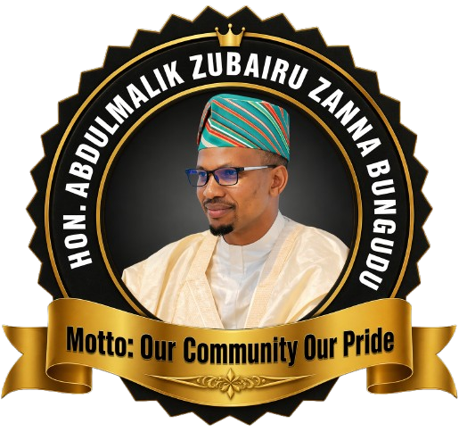

Leadership • Community • Development

Hon. Abdulmalik Zubairu Zannan Bungudu is a respected community leader and public figure known for his dedication to societal development, youth empowerment, and progressive leadership. He has contributed significantly to initiatives that promote education, unity, and sustainable growth within his community.
With a strong passion for service, he continues to inspire positive change through his vision, commitment, and impactful projects aimed at improving lives.
To build a strong, united, and progressive community where opportunities are accessible to all, especially the youth, and where innovation and development are prioritized.
To promote education, empower young people, support entrepreneurship, and collaborate with stakeholders to drive meaningful development and social impact.